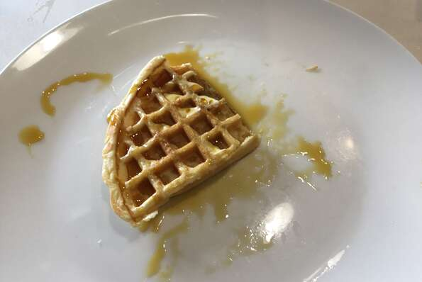

Classic Waffles

Description
A nice classic crispy waffle, great for breakfast!
Ingredients
- 2 cups flour
- 1 teaspoon salt
- 4 teaspoons baking powder
- 2 tablespoons white sugar
- 2 eggs
- 1 1/2 cups warm milk
- 1/3 cup butter, melted
- 1 teaspoon vanilla extract
- In a large bowl, mix together flour, salt, baking powder and sugar, set aside. Preheat your waffle iron.
- In separate bowl, beat eggs, stir in milk, butter and vanilla. Pour mixture into the flour mixture, beat until blended.
- Pour batter into waffle iron, cook until golden and crisp. Serve immediately.